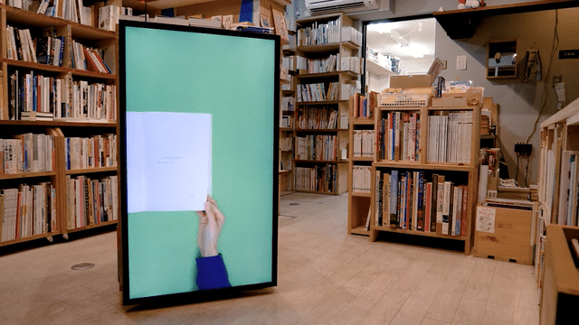
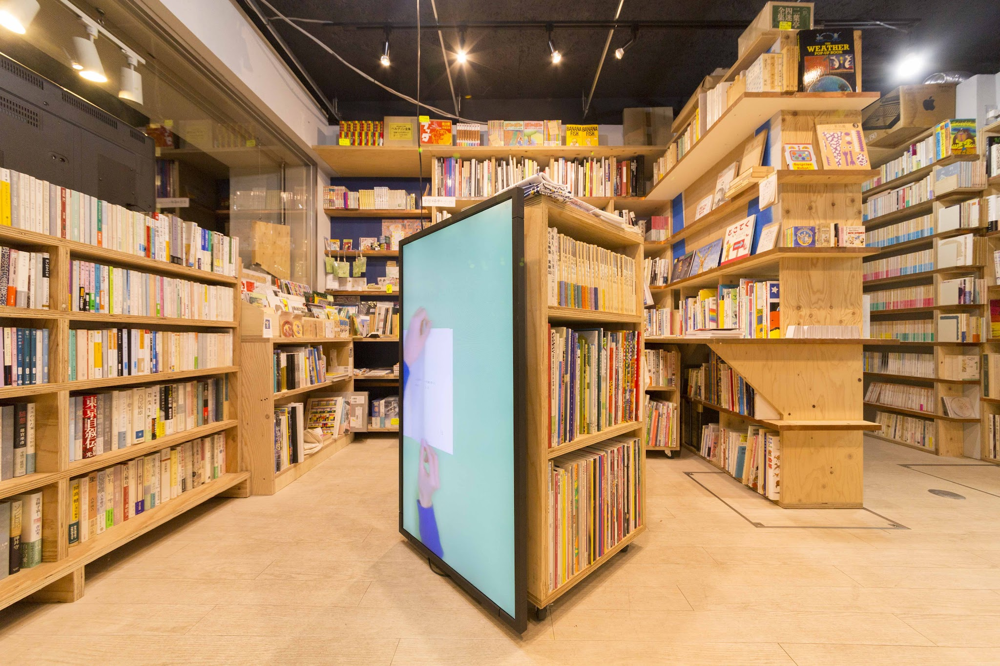
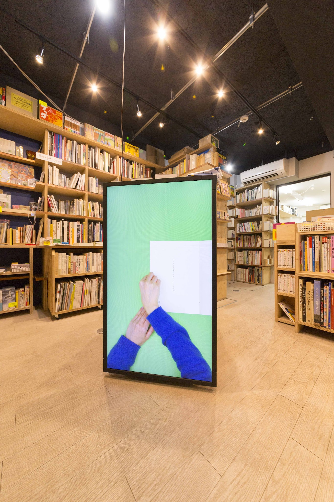

JPめくる映像 実験 03(折り返しの実験)
ENTurning over Pages in the Monitor#3
伊東 友子 ＋ 時里 充 / Tomoko Ito + Mitsuru Tokisato
2018

前半の右側のページにはめくる手が行なった動作が、後半の左側ページにはめくる手に対する動作の指示が記されています。右側から左側に移動する時、何が起こっているでしょうか。横書き(右綴じ)から縦書き(左綴じ)に折り返しているように見える映像は、実際にはそうではないのです。めくる手とページの動きに不自然な点を感じたら、それが手掛かりです。右半分と左半分にトリミングされたのは画面だけではなく、それぞれの画面の時間軸もまた、折り返しているのです。
